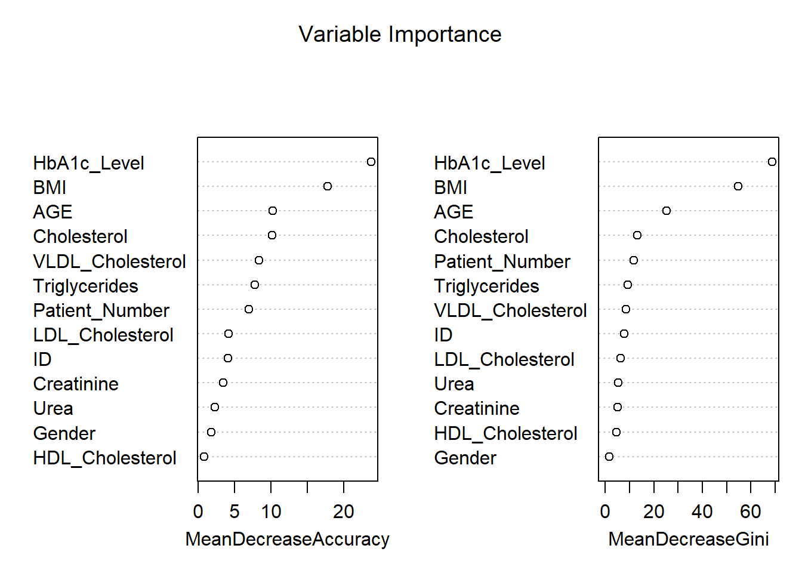
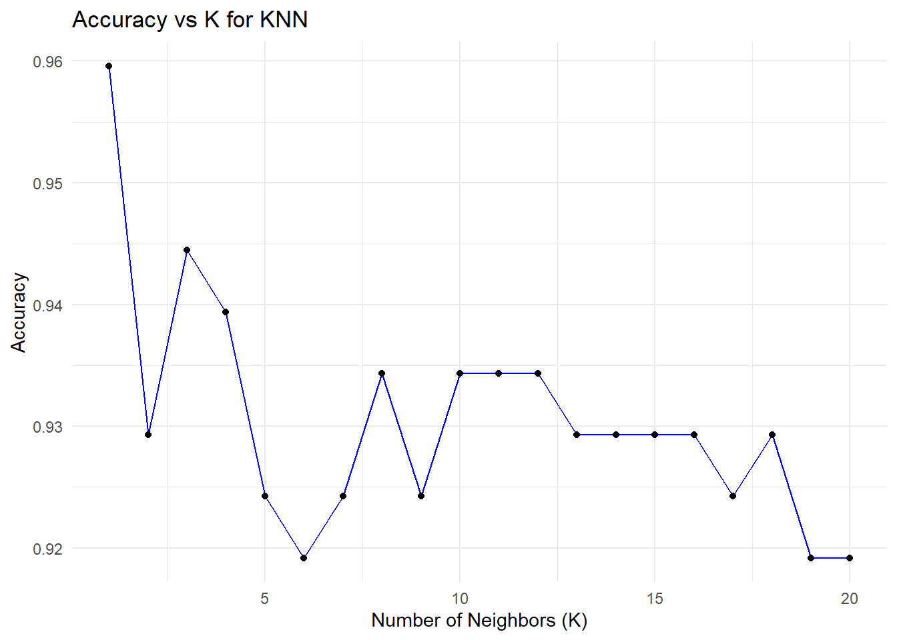
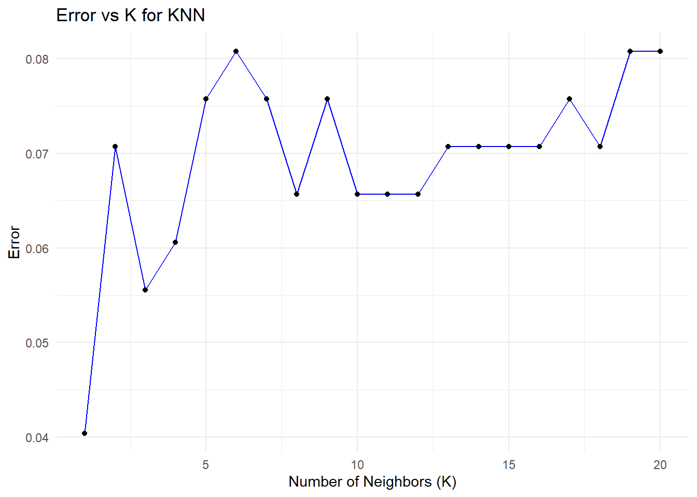
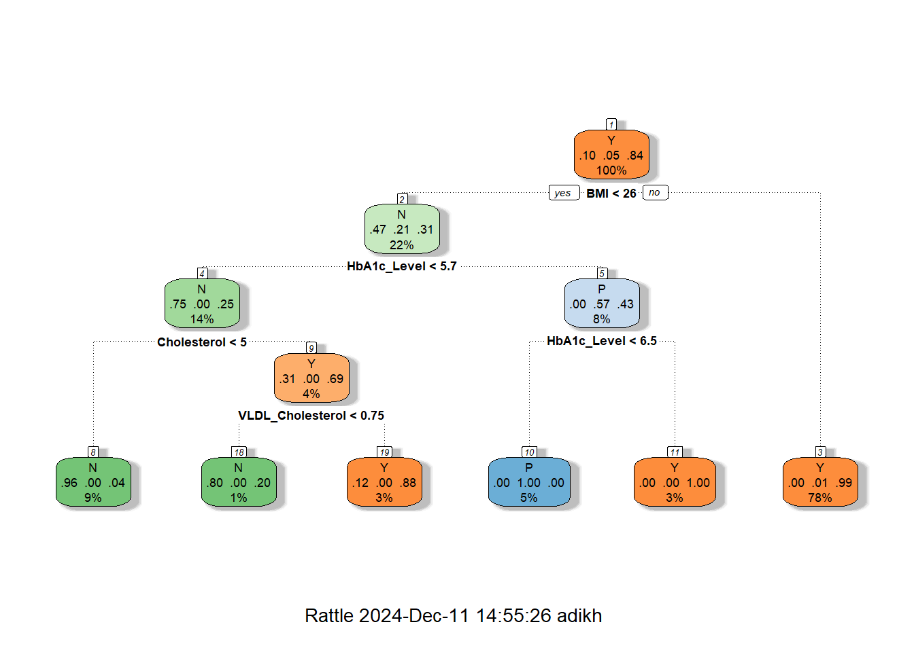
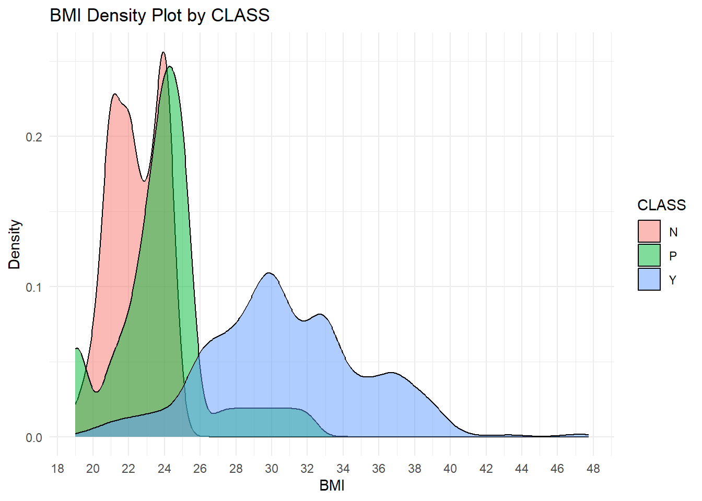
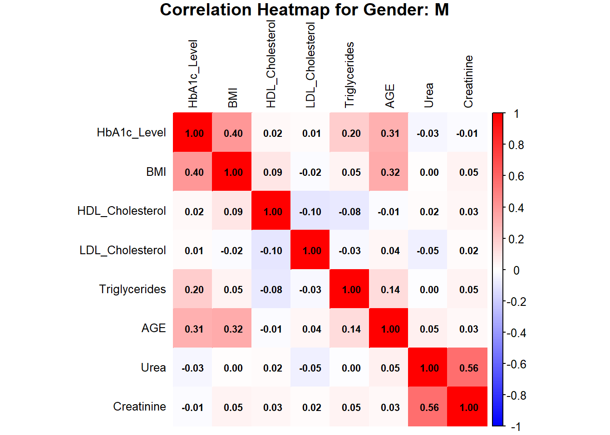
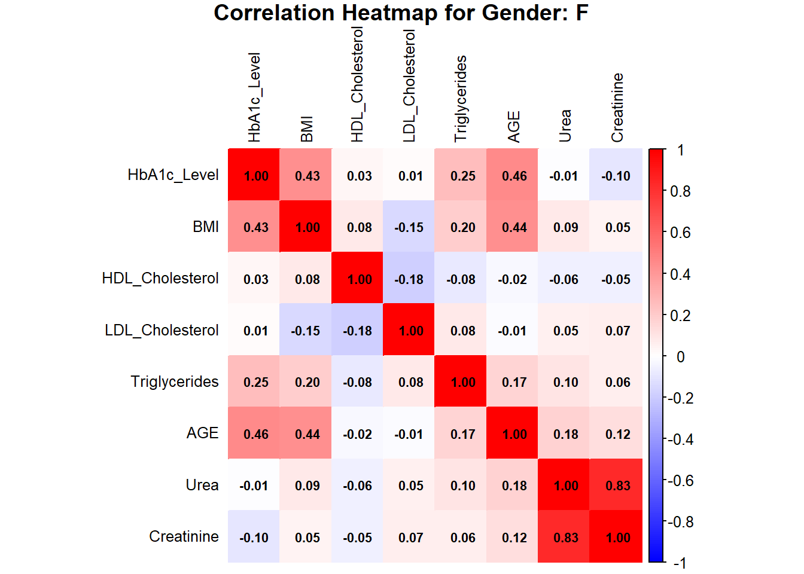
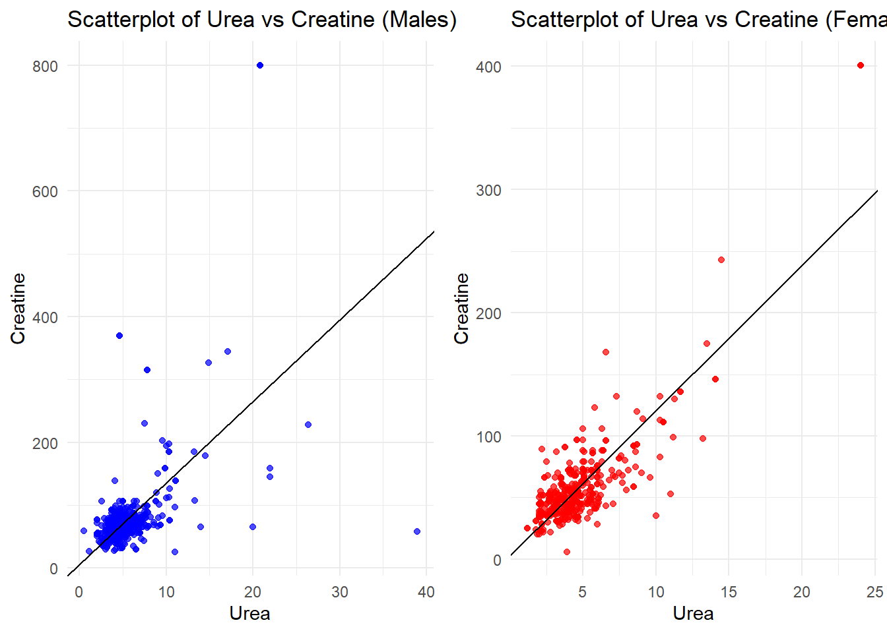
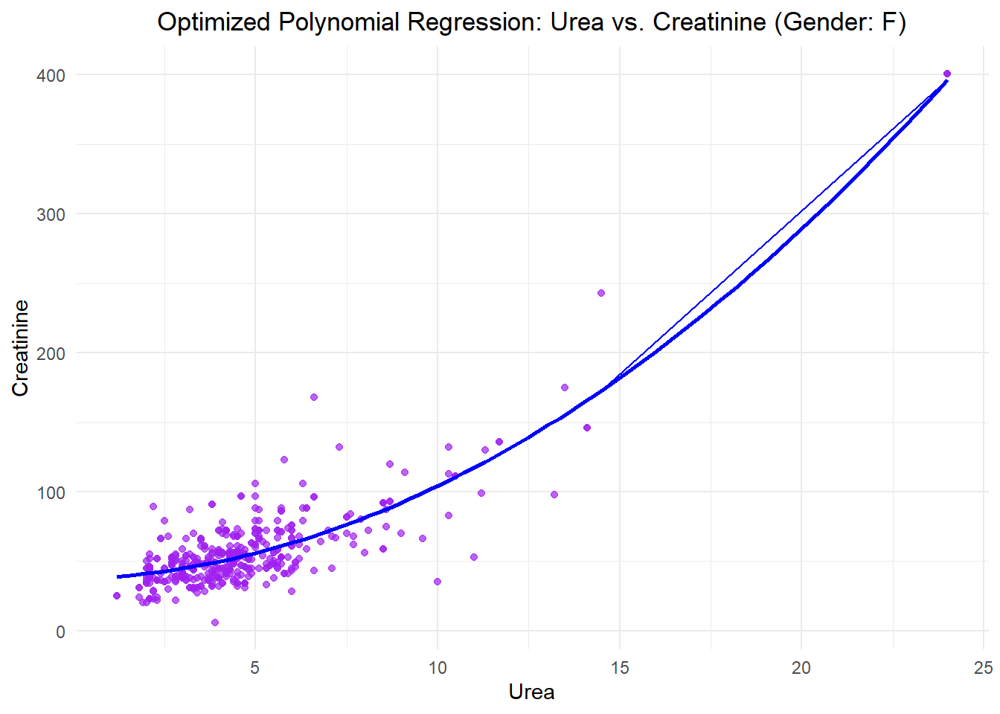

# Load dataset
data <- read.csv('C:/Users/adikh/OneDrive/Desktop/Stat/AnkitBorle/Dataset.csv')
sum(is.na(data))[1] 0library(dplyr)
# Rename the columns
data <- data %>%
rename(
Patient_Number = No_Pation,
Creatinine = Cr,
HbA1c_Level = HbA1c,
Cholesterol = Chol,
Triglycerides = TG,
HDL_Cholesterol = HDL,
LDL_Cholesterol = LDL,
VLDL_Cholesterol = VLDL
)
colnames(data) [1] "ID" "Patient_Number" "Gender" "AGE"
[5] "Urea" "Creatinine" "HbA1c_Level" "Cholesterol"
[9] "Triglycerides" "HDL_Cholesterol" "LDL_Cholesterol" "VLDL_Cholesterol"
[13] "BMI" "CLASS" Before removing the spaces
N N P Y Y
102 1 53 840 4 After removing the spaces
library(knitr)
library(kableExtra)
# Assuming `data` is your dataframe loaded into R
# Group by CLASS and calculate summary statistics
summary_stats <- data %>%
group_by(CLASS) %>%
summarise(
BMI_mean = mean(BMI, na.rm = TRUE),
BMI_median = median(BMI, na.rm = TRUE),
BMI_sd = sd(BMI, na.rm = TRUE),
LDL_mean = mean(LDL_Cholesterol, na.rm = TRUE),
LDL_median = median(LDL_Cholesterol, na.rm = TRUE),
LDL_sd = sd(LDL_Cholesterol, na.rm = TRUE),
HDL_mean = mean(HDL_Cholesterol, na.rm = TRUE),
HDL_median = median(HDL_Cholesterol, na.rm = TRUE),
HDL_sd = sd(HDL_Cholesterol, na.rm = TRUE),
TG_mean = mean(Triglycerides, na.rm = TRUE),
TG_median = median(Triglycerides, na.rm = TRUE),
TG_sd = sd(Triglycerides, na.rm = TRUE)
)
# View the results
summary_stats %>%
kable(format = "html", digits = 2) %>%
kable_styling(font_size = 10) # Adjust the font size as needed| CLASS | BMI_mean | BMI_median | BMI_sd | LDL_mean | LDL_median | LDL_sd | HDL_mean | HDL_median | HDL_sd | TG_mean | TG_median | TG_sd |
|---|---|---|---|---|---|---|---|---|---|---|---|---|
| N | 22.37 | 22 | 1.42 | 2.63 | 2.6 | 0.98 | 1.23 | 1.1 | 0.51 | 1.63 | 1.3 | 1.03 |
| P | 23.93 | 24 | 2.71 | 2.49 | 2.5 | 0.87 | 1.13 | 1.0 | 0.38 | 2.13 | 1.8 | 1.06 |
| Y | 30.81 | 30 | 4.32 | 2.62 | 2.5 | 1.14 | 1.21 | 1.1 | 0.69 | 2.45 | 2.1 | 1.43 |
data$CLASS <- as.factor(data$CLASS)
set.seed(42) # For reproducibility
# Split data -> 80% as training data and 20% as testing data
train_index <- createDataPartition(data$CLASS, p = 0.8, list = FALSE)
train_data <- data[train_index, ]
test_data <- data[-train_index, ]
# Fit a Random Forest model
rf_model <- randomForest(CLASS ~ ., data = train_data, ntree = 100, importance = TRUE,random_state = 42)
# Make predictions on the test set
predictions <- predict(rf_model, test_data)
# Evaluate the model
conf_matrix <- confusionMatrix(predictions, test_data$CLASS)
print(conf_matrix)Confusion Matrix and Statistics
Reference
Prediction N P Y
N 20 0 2
P 0 10 1
Y 0 0 165
Overall Statistics
Accuracy : 0.9848
95% CI : (0.9564, 0.9969)
No Information Rate : 0.8485
P-Value [Acc > NIR] : 5.887e-11
Kappa : 0.9457
Mcnemar's Test P-Value : NA
Statistics by Class:
Class: N Class: P Class: Y
Sensitivity 1.0000 1.00000 0.9821
Specificity 0.9888 0.99468 1.0000
Pos Pred Value 0.9091 0.90909 1.0000
Neg Pred Value 1.0000 1.00000 0.9091
Prevalence 0.1010 0.05051 0.8485
Detection Rate 0.1010 0.05051 0.8333
Detection Prevalence 0.1111 0.05556 0.8333
Balanced Accuracy 0.9944 0.99734 0.9911# Get variable importance from the fitted model
var_importance <- randomForest::importance(rf_model)
# Print variable importance
print(var_importance) N P Y MeanDecreaseAccuracy
ID 2.90033107 3.0463945 2.2066249 4.0638413
Patient_Number 3.60284624 3.1698481 6.1876847 6.9406985
Gender 0.62418016 1.4389186 0.9721012 1.7955657
AGE 5.27502908 8.7274922 7.7950173 10.1960232
Urea 0.05947339 0.4007783 3.4196877 2.2489929
Creatinine -0.12163660 2.6791981 3.4951424 3.4406207
HbA1c_Level 25.83558650 12.7027524 11.1660087 23.7806336
Cholesterol 6.94634560 1.9284815 9.1095206 10.1463380
Triglycerides 5.92203587 3.6609051 5.6145585 7.7311601
HDL_Cholesterol -1.32925931 1.4204124 1.3977476 0.7926818
LDL_Cholesterol 0.23744178 2.3292662 3.9620622 4.1589452
VLDL_Cholesterol 6.35132050 4.7634034 6.2262778 8.3446318
BMI 21.81047332 8.4210010 9.3543430 17.7783627
MeanDecreaseGini
ID 7.906663
Patient_Number 11.867330
Gender 1.709621
AGE 25.278841
Urea 5.279241
Creatinine 5.169382
HbA1c_Level 68.694199
Cholesterol 13.134244
Triglycerides 9.375600
HDL_Cholesterol 4.554059
LDL_Cholesterol 6.381994
VLDL_Cholesterol 8.575811
BMI 54.714782
data$CLASS <- as.factor(data$CLASS) # Ensure CLASS is a factor
# Scale numeric features
numeric_columns <- c("AGE", "Urea", "Creatinine", "HbA1c_Level", "Cholesterol", "BMI")
train_scaled <- scale(train_data[, numeric_columns])
test_scaled <- scale(test_data[, numeric_columns])
# Cross-validation to find the optimal k
set.seed(42)
error<-rep(NA,20) # Placeholder
for (i in 1:20) {
# Perform KNN
knn_pred <- knn(train = train_scaled, test = test_scaled, cl = train_data$CLASS, k = i)
# Calculate test error
error[i] <- mean(knn_pred != test_data$CLASS)
}
error_df <- data.frame(
K = 1:20, # Number of neighbors
Error = error # Test error rates
)
# Add Accuracy (1 - Error) to the data frame
error_df$Accuracy <- 1 - error_df$Error
# Plot accuracy vs. K using ggplot2
ggplot(error_df, aes(x = K, y = Accuracy)) +
geom_line(color = "blue") +
geom_point() +
ggtitle("Accuracy vs K for KNN") +
xlab("Number of Neighbors (K)") +
ylab("Accuracy") +
theme_minimal()
ggplot(error_df, aes(x = K, y = Error)) +
geom_line(color = "blue") +
geom_point() +
ggtitle("Error vs K for KNN") +
xlab("Number of Neighbors (K)") +
ylab("Error") +
theme_minimal()
# Find the minimum error and corresponding K value
min_error <- min(error_df$Error)
optimal_k <- error_df$K[which.min(error_df$Error)]
# Print the results
print(paste("Minimum Error:", round(min_error, 4)))[1] "Minimum Error: 0.0404"[1] "Optimal K: 1"###Decision Tree
# Fit a Decision Tree model
dt_model <- rpart(CLASS ~ ., data = train_data, method = "class")
# Plot the Decision Tree
fancyRpartPlot(dt_model)
# Make predictions on the test data
predictions <- predict(dt_model, test_data, type = "class")
# Evaluate the model
conf_matrix <- confusionMatrix(predictions, test_data$CLASS)
print(conf_matrix)Confusion Matrix and Statistics
Reference
Prediction N P Y
N 19 0 2
P 0 10 0
Y 1 0 166
Overall Statistics
Accuracy : 0.9848
95% CI : (0.9564, 0.9969)
No Information Rate : 0.8485
P-Value [Acc > NIR] : 5.887e-11
Kappa : 0.9441
Mcnemar's Test P-Value : NA
Statistics by Class:
Class: N Class: P Class: Y
Sensitivity 0.95000 1.00000 0.9881
Specificity 0.98876 1.00000 0.9667
Pos Pred Value 0.90476 1.00000 0.9940
Neg Pred Value 0.99435 1.00000 0.9355
Prevalence 0.10101 0.05051 0.8485
Detection Rate 0.09596 0.05051 0.8384
Detection Prevalence 0.10606 0.05051 0.8434
Balanced Accuracy 0.96938 1.00000 0.9774# Optional: Print overall accuracy
accuracy <- conf_matrix$overall["Accuracy"]
cat("Accuracy:", accuracy, "\n")Accuracy: 0.9848485 # Density plot to compare BMI distribution
ggplot(data, aes(x = BMI, fill = CLASS)) +
geom_density(alpha = 0.5) +
scale_x_continuous(breaks=seq(0,48,by=2))+
labs(title = "BMI Density Plot by CLASS", x = "BMI", y = "Density") +
theme_minimal()
# Correlation Heatmaps by Gender with Values in Boxes
# Subset data by gender
data_male <- subset(data, Gender == "M")
data_female <- subset(data, Gender == "F")
# Calculate correlation matrix
correlation_matrix_male <- cor(data_male[, c("HbA1c_Level", "BMI", "HDL_Cholesterol", "LDL_Cholesterol", "Triglycerides", "AGE", "Urea", "Creatinine")], use = "complete.obs")
correlation_matrix_female <- cor(data_female[, c("HbA1c_Level", "BMI", "HDL_Cholesterol", "LDL_Cholesterol", "Triglycerides", "AGE", "Urea", "Creatinine")], use = "complete.obs")
# Plot heatmap with values
corrplot(correlation_matrix_male, method = "color",
col = colorRampPalette(c("blue", "white", "red"))(200),
addCoef.col = "black", # Add values to the boxes in black
tl.col = "black", # Labels in black
tl.cex = 0.8, # Adjust label size
number.cex = 0.7, # Adjust coefficient size
title = paste("Correlation Heatmap for Gender: M"), mar = c(0, 0, 1, 0))
corrplot(correlation_matrix_female, method = "color",
col = colorRampPalette(c("blue", "white", "red"))(200),
addCoef.col = "black", # Add values to the boxes in black
tl.col = "black", # Labels in black
tl.cex = 0.8, # Adjust label size
number.cex = 0.7, # Adjust coefficient size
title = paste("Correlation Heatmap for Gender: F"), mar = c(0, 0, 1, 0))
#linear model
lm_female <- lm(Creatinine~Urea, data_female)
lm_male <- lm(Creatinine~Urea, data_male)
# Scatterplot for males
plot_male <- ggplot(data_male, aes(x = Urea, y = Creatinine)) +
geom_point(color = "blue", alpha = 0.7) +
geom_abline(intercept = coef(lm_male)[1], slope = coef(lm_male)[2], color = "black") +
labs(title = "Scatterplot of Urea vs Creatine (Males)",
x = "Urea", y = "Creatine") +
theme_minimal()
# Scatterplot for females
plot_female <- ggplot(data_female, aes(x = Urea, y = Creatinine)) +
geom_point(color = "red", alpha = 0.7) +
geom_abline(intercept = coef(lm_female)[1], slope = coef(lm_female)[2], color = "black") +
labs(title = "Scatterplot of Urea vs Creatine (Females)",
x = "Urea", y = "Creatine") +
theme_minimal()
# Arrange the plots side by side
grid.arrange(plot_male, plot_female, ncol = 2)
##########
#optimize
# Fit a polynomial regression model (degree 2)
poly_model <- lm(Creatinine ~ poly(Urea, 2), data = data_female)
# Make predictions
data_female$Cr_pred <- predict(poly_model, newdata = data_female)
# Evaluate the model: Mean Squared Error and R-squared
mse_poly <- mean((data_female$Creatinine - data_female$Cr_pred)^2)
r2_poly <- summary(poly_model)$r.squared
# Visualization
ggplot(data_female, aes(x = Urea, y = Creatinine)) +
geom_point(alpha = 0.7, color = "purple", label = "Data Points") +
stat_smooth(method = "lm", formula = y ~ poly(x, 2), color = "blue", se = FALSE, label = "Polynomial Regression Curve") +
labs(title = "Optimized Polynomial Regression: Urea vs. Creatinine (Gender: F)",
x = "Urea", y = "Creatinine") +
theme_minimal() +
theme(plot.title = element_text(hjust = 0.5)) +
geom_line(aes(y = Cr_pred), color = "blue")
# Print evaluation metrics
cat("Evaluation metrics\n",
"Mean Squared Error (MSE):", mse_poly, "\n",
"R-squared (R²):",r2_poly,"\n")Evaluation metrics
Mean Squared Error (MSE): 272.8252
R-squared (R²): 0.8057451 # Fitting the polynomial model
poly_model <- lm(Creatinine ~ poly(Urea, 2), data = data_female)
# Predictions
predictions <- predict(poly_model, newdata = data_female)
# Residuals
residuals <- data_female$Creatinine - predictions
# Metrics
mae <- mean(abs(residuals))
mape <- mean(abs(residuals / data_female$Creatinine)) * 100
accuracy <- 100 - mape
r_squared <- summary(poly_model)$r.squared
# Output the results
cat("Results for Females\n",
"---------------------\n",
"Mean Absolute Error (MAE):", mae, "\n",
"Mean Absolute Percentage Error (MAPE):", mape, "%\n",
"Model Accuracy:", accuracy, "%\n",
"R-squared (R²):", r_squared, "\n")Results for Females
---------------------
Mean Absolute Error (MAE): 11.85335
Mean Absolute Percentage Error (MAPE): 24.38884 %
Model Accuracy: 75.61116 %
R-squared (R²): 0.8057451 # Fitting the polynomial model for males
poly_model_male <- lm(Creatinine ~ poly(Urea, 2), data = data_male)
# Predictions for males
predictions_male <- predict(poly_model_male, newdata = data_male)
# Residuals for males
residuals_male <- data_male$Creatinine - predictions_male
# Metrics for males
mae_male <- mean(abs(residuals_male)) # Mean Absolute Error
mape_male <- mean(abs(residuals_male / data_male$Creatinine)) * 100 # Mean Absolute Percentage Error
accuracy_male <- 100 - mape_male # Accuracy
r_squared_male <- summary(poly_model_male)$r.squared # R-squared
# Output the results for males
cat("Results for Males\n",
"---------------------\n",
"Mean Absolute Error (MAE) for Males:", mae_male, "\n",
"Mean Absolute Percentage Error (MAPE) for Males:", mape_male, "%\n",
"Model Accuracy for Males:", accuracy_male, "%\n",
"R-squared (R²) for Males:", r_squared_male, "\n")Results for Males
---------------------
Mean Absolute Error (MAE) for Males: 26.18579
Mean Absolute Percentage Error (MAPE) for Males: 32.58835 %
Model Accuracy for Males: 67.41165 %
R-squared (R²) for Males: 0.3310646